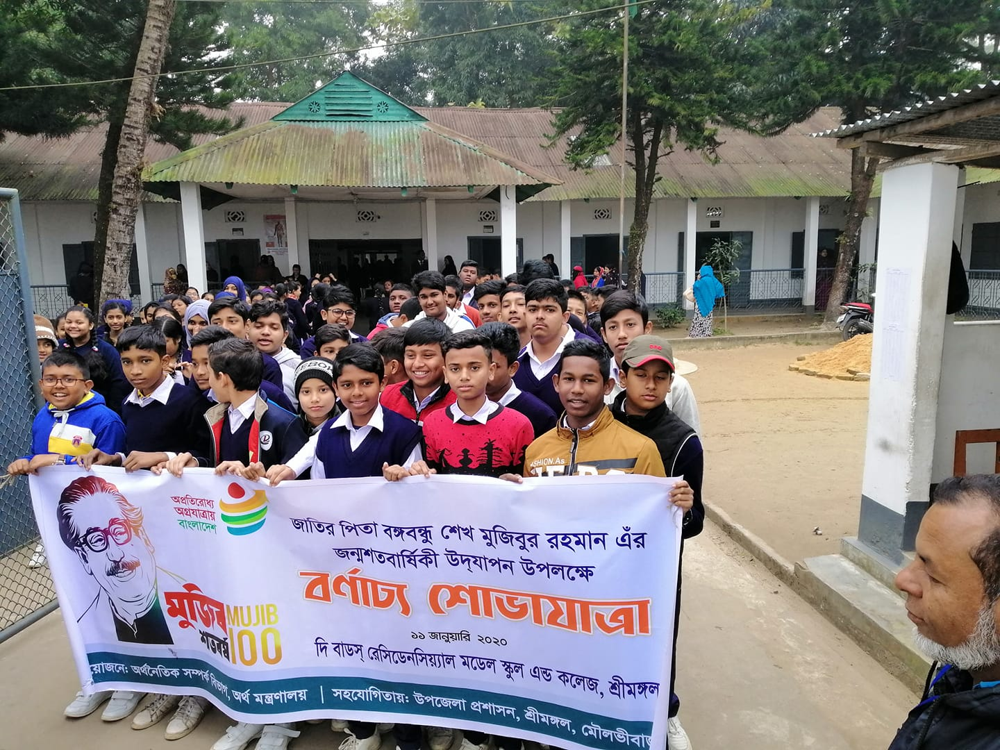

International Mother Language Day Rally
Science Fair 2019
100th birthday of Father of the Nation Bangabandhu Sheikh Mujibur Rahman
...-
Annual Cultural function-2020
School culture and school climate are intangible, but essential elements within a school environment. These terms are frequently used interchangeably and school culture and school climate will be defined, with school culture being the adopted term throughout this paper. Climate is more relational; it is illustrated by the attitudes and behaviors of the school staff and is focused on the style of the school’s organizational system. Whereas, culture is a deeper level of reflection of shared values, beliefs, and traditions between staff members. School leaders play a vital role in developing and enhancing the school culture. Positive school cultures provide a safe, supportive, encouraging, inviting, and challenging environment for students and staff, which in turn allows students’ academic achievement to evolve. Interventions and strategies for creating a positive school culture will be recognized and discussed. This paper will supply an overview of characteristics that make up a positive school culture as well as a toxic school culture, will discuss the importance of school leaders, and will examine strategies and interventions for creating a positive school culture. This paper will also discuss an Adlerian perspective on school culture and review implications for school counselors.
-
-
Opening Hours : Monday: 09:00 - 16:00
Tuesday: 09:00 - 16:00
Wednesday: 09:00 - 16:00
Thursday: 09:00 - 12:00
Friday: -
Saturday: 09:00 - 16:00
Sunday: 09:00 - 16:00 -
Opening Hours : Monday: 09:00 - 16:00
Tuesday: 09:00 - 16:00
Wednesday: 09:00 - 16:00
Thursday: 09:00 - 12:00
Friday: -
Saturday: 09:00 - 16:00
Sunday: 09:00 - 16:00
Copyright © 2012 The Buds Residential Model School and College All rights reserved